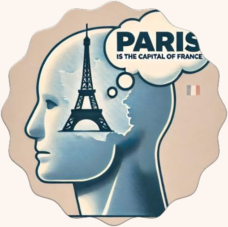

Before we can ask what the mind is, we need to know what marks something out as mental. Take the tour: substances and properties, phenomenal properties and qualia, intentionality, and the two perspectives we have on ourselves.
Stop 0 · The big question
What makes something a mental state?
You are reading this sentence. Perhaps you are also a little tired, hoping for a good grade, and aware of the colour of the screen. All of these are mental states. Your brain, meanwhile, is a grey organ of about 1.4 kilograms in which billions of neurons are firing. The mind–body problem asks how these two descriptions fit together. Is the mind a thing of its own, separate from the brain? Is it a set of special properties that the brain has? Or is talk of ‘the mind’ really just talk about the brain and the body?
Every theory in this module – dualist or physicalist – has to answer to the same data: the features that mental states actually have. That is why the specification begins here. AQA picks out two features. Some or all mental states have phenomenal properties: there is something it is like to have them. And some or all mental states have intentionality: they are about something. If a theory of mind cannot account for these two features, it is not a theory of mind at all. You will see this test applied again and again: the zombie and Mary arguments press on phenomenal properties; the self-refutation objection to eliminativism presses on intentionality.
The structure of this topic. Stop 1 gives you the metaphysical vocabulary – substance, property, physical – that every later theory uses. Stops 2 and 3 cover the two features named in the specification. Stop 4 explains why the first-person perspective makes the mind so puzzling. Stop 5 maps the theories you will meet next.
Choose where to go
Stop 1 · The tools of the debate
Substances, properties and the physical
The departmental handout frames the whole module with one question: should we understand the mind as a substance – that which stays the same through changes – or as a property, for example a property of the brain? To answer it you need three pieces of vocabulary.
Substance and property. The chair is the substance. Its colour, its weight and where it stands are its properties. Paint it green and move it to another room: the properties change, but it is the same chair.
Substance
A substance is that which stays the same through changes in its properties. Philosophers also say that a substance is ontologically independent: it does not need anything else (apart, perhaps, from God) in order to exist. A table is a substance; its colour and its position are properties of it.
Property
A property is a feature of a substance – what is true of a substance, or what a substance might possess. Properties depend on substances, but not the other way round: there is no ‘red’ floating free of any red thing, but the table could exist with a different colour. This asymmetry matters. A substance dualist says the mind is a substance in its own right; a property dualist says there is only one kind of substance (physical), but it has two kinds of property.
The physical
The physical world. Physical objects take up three-dimensional space and obey physical laws – from galaxies down to electrons.
The body is physical: it takes up three-dimensional space and is subject to physical laws. These laws are widely held to be closed: physical events can only be caused by other physical events or states. This is the causal closure of physics. Keep it in mind – it is the source of the interaction problem for substance dualism (3.4.2) and of the worry that property dualism leaves the mind with nothing to do.
Key idea. The mind–body problem can be stated precisely: is the mind a distinct substance, a distinct kind of property, or nothing over and above physical substances and their physical properties?
Why the mind looks different
The handout lists five features that seem to distinguish the mental from the physical: (1) intentionality – the mind is directed at things; (2) qualia – the intrinsic qualities of experience; (3) thought – the mind has propositional attitudes; (4) the first-person perspective – we see things ‘from the inside out’; and (5) the third-person perspective – we can also see things from an abstract, impersonal point of view. Stops 2–4 take these in turn.
Stop 2 · Feature 1
Phenomenal properties and qualia
What is it like? Seeing the red of a rose, smelling it, feeling a thorn: each experience has its own distinctive ‘feel’. That feel is a phenomenal property.
Consciousness and ‘what it is like’
To be conscious, the handout says, is to be a subject with a rich experiential life. It involves not only being aware of theoretical propositions, or knowing how to do something, but being acquainted with certain phenomena. When you see red, hear a symphony or smell fresh coffee, there is something it is like for you to have that experience. Thomas Nagel made this phrase famous. In ‘What is it like to be a bat?’ (1974) he argues that
‘an organism has conscious mental states if and only if there is something that it is like to be that organism – something it is like for the organism.’Thomas Nagel, ‘What is it like to be a bat?’ (1974), as quoted in the departmental handout
We can assume there is something it is like to be a bat, though we cannot imagine what it is like to navigate by echolocation; there is nothing it is like to be a chair. The features of experience that make up ‘what it is like’ are its phenomenal properties.
Qualia: the specification’s definition
Some, but not all, philosophers use the term qualia (singular: quale, Latin for ‘of what kind’) for these properties. AQA defines qualia precisely, and you should learn the definition word for word:
‘intrinsic and non-intentional phenomenal properties that are introspectively accessible’AQA A-level Philosophy specification 7172, 3.4.1
Each word does work:
Intrinsic – the property belongs to the experience in itself, not in virtue of its relation to anything else. The redness of your experience is not a matter of what caused it or what it makes you do.
Non-intentional – the property is not a matter of the experience being about or representing anything. The throbbing of a headache does not seem to represent anything at all.
Phenomenal – it is part of what the experience is like for the subject.
Introspectively accessible – you can become aware of it by attending to your own experience.
Why ‘some, but not all’? Everyone agrees that experiences have a phenomenal character. What is disputed is whether that character consists of special intrinsic, non-intentional properties. If it does, physicalism faces a serious challenge, because it is hard to see how the intrinsic redness of an experience could be a property of neurons. This is why the qualia debate sits at the heart of 3.4.2–3.4.4.
Which mental states have phenomenal properties?
The specification says ‘all or at least some’. Sensations (pain, itches) and perceptual experiences (seeing red) clearly have phenomenal properties. Emotions such as fear seem to. But what is it like to believe that Paris is the capital of France – especially when you are not thinking about it, as you were not a minute ago? Many philosophers think beliefs and other propositional attitudes have no phenomenal character of their own. Others argue that thinking has a distinctive ‘cognitive phenomenology’. You do not need to settle this for the exam, but you should be able to explain why the specification hedges.
The challenge to physicalism, in standard form
Some mental states have qualia. (Introspection: attending to our own experiences.)
Qualia are intrinsic and non-intentional. (Definition.)
Physical science describes things only in terms of structure, function and causal relations. (A claim about the nature of physical explanation; Nagel and Chalmers press it.)
Intrinsic, non-intentional properties are not structural, functional or causal properties. (From 2.)
This is not on the specification as an argument in its own right; it shows the shape of reasoning behind the zombie and knowledge arguments you will meet in property dualism.
Stop 3 · Feature 2
Intentionality
Aiming.Intentio was the Latin word for ‘aim’ or ‘stretching out’, used of the stretch of an archer’s bow. A mental state ‘aims at’ something beyond itself.
Brentano’s mark of the mental
In the late nineteenth century Franz Brentano claimed that what marks out mental phenomena from physical phenomena is that they are intentional. This has nothing to do with intending to do something. The old word intentio was used for the stretch of an archer’s bow. Brentano’s claim was that the mind is always directed at objects outside itself. A belief is about something; a fear is a fear of something; a desire is a desire for something. When you love someone, your love is aimed at that person.
Propositional attitudes

Thought. To think that Paris is the capital of France is to have an attitude (belief) towards a proposition (that Paris is the capital of France).
One central kind of intentional state is thought. According to philosophers, to think is to be in a mental state that represents some proposition or content. To think that Paris is the capital of France is to be in a mental state that represents that Paris is the capital of France. In analytic philosophy this is called a propositional attitude, because it has two parts:
the attitude – believing, hoping, fearing, wanting, doubting; and
the content – the proposition the attitude is directed at, which can be true or false.
The same content can be the object of different attitudes (I hope it will rain; you fear it will rain), and the same attitude can take different contents. Propositional attitudes explain behaviour: if you want to stay dry and believe it will rain, you take an umbrella. Remember this – it is the core of ‘folk psychology’, which eliminative materialists say is false (3.4.3).
Intentional inexistence
Intentional states can be about things that do not exist. You can fear a ghost, hope for world peace, or think about Sherlock Holmes. Brentano called this intentional inexistence. It makes intentionality puzzling for physicalism: physical relations like ‘is next to’ or ‘causes’ need both things to exist; ‘is thinking about’ does not.
Why intentionality puzzles physicalists
Some mental states are about things, including things that do not exist. (Brentano; ordinary examples such as fearing a ghost.)
No purely physical state is intrinsically about anything. (A pattern of neural firing is just a pattern; a book is ‘about’ something only because people interpret it.)
So either intentional states are not purely physical, or intentionality must be explained (or explained away) in other terms.
Physicalists respond in different ways: functionalists try to explain content through causal role; the Churchlands suspect the folk notion of content will be replaced (3.4.3–3.4.4).
Do all mental states have intentionality?
Yes (intentionalism)
Even sensations seem to represent: pain represents damage in a part of your body; seeing red represents a red surface. Some philosophers say phenomenal properties just are intentional properties.
Not all
Moods such as general anxiety or elation seem not to be directed at anything in particular. And if qualia exist, as defined by AQA, they are by definition non-intentional. The specification’s ‘all or at least some’ leaves this open.
Evaluation: two marks of the mental?
Neither feature alone seems to cover every mental state. Beliefs clearly have intentionality but may lack phenomenal character; moods have phenomenal character but may lack intentionality. That is why the specification names both. A reasonable judgement is that the mental is marked by a family of features: a state counts as mental if it has phenomenal properties, intentional properties, or both. The consequence is that a theory of mind has two jobs, and success at one (say, functionalism’s account of belief) does not guarantee success at the other (qualia).
Stop 4 · Why the mind is puzzling
First-person and third-person perspectives
First personThe world from the inside: my body, my room, my experiences.Third personMyself as one person among many, part of a wider system.
The first-person perspective
One mark of consciousness is that it is ‘like something’ to be conscious. This is the perspective we have when we look out at the world from within and feel ourselves embodied. Our first-person perspective is in some important way private, and we have privileged, or at least better, access to it than anyone else has. It is the subjective perspective: how things seem from the inside.
The third-person perspective
The third-person perspective is the one we take when we consider the world without our own point of view at the centre. We think of ourselves as units in a much wider universe, subject to physical, psychological and sociological laws. Science works from this perspective: it aims at descriptions that anyone could check.
Nagel’s challenge
Nagel argues that the subjective character of experience is fully comprehensible only from one point of view. Science makes progress by moving towards greater objectivity – leaving out how things seem to particular observers. But with consciousness, that move takes us further from the phenomenon, not closer to it. An intelligent Martian could understand water completely without sharing our experience of it; but it could not understand our experience without knowing what it is like. (Paraphrased from the departmental handout on Nagel.)
Nagel’s argument, in standard form (paraphrased)
A creature is conscious if and only if there is something it is like to be that creature. (Nagel’s account of consciousness.)
What it is like to be a creature can only be fully grasped from that creature’s point of view. (The bat example: we cannot imagine echolocation from the inside.)
Physical explanation abstracts away from every particular point of view. (This is what makes it objective.)
Therefore, physical explanation, as we currently understand it, leaves out the subjective character of consciousness.
Careful: what Nagel does not claim
Nagel does not say that physicalism is false. His conclusion is about understanding: we have no idea at present what it would mean for experience to be physical. He compares this to someone who finds a butterfly in a safe where a caterpillar was locked: they have reason to believe the butterfly was the caterpillar, without understanding how.
The asymmetry of self-knowledge
The two perspectives create an asymmetry. I know that I am in pain immediately, without observing my behaviour. I know that you are in pain only by inference from what you say and do. This asymmetry is used against behaviourism (3.4.3), and it generates the problem of other minds for dualism (3.4.2).
Stop 5 · Where next
A map of the theories
Every theory in this module is an answer to the question from Stop 1: is the mind a substance, a property, or nothing over and above the physical? Here is how they line up in the AQA specification.
How each theory handles the two features
Substance dualism – both features belong to an immaterial mind. Problem: how does it interact with the body?
Property dualism – qualia are non-physical properties of a physical brain. Problem: are they causally idle?
Behaviourism – mental talk is talk about behaviour or dispositions. Problem: seems to leave out the inner feel entirely.
Identity theory – each type of mental state is a type of brain state. Problem: can creatures with different brains share a mental state?
Eliminative materialism – some folk-psychological states, perhaps beliefs and desires, do not exist. Problem: can the theory even be stated?
Functionalism – a mental state is whatever plays a certain causal role. Problem: could the role be played with different qualia, or none?
Tip for 25-mark essays. Almost every essay in this module can be organised around the two features from this topic. Ask of any theory: does it account for phenomenal properties? does it account for intentionality? does it fit with causal closure?
Revise · Evaluation, summary and quiz
What is distinctive about the mental?
Overall evaluation
The specification gives two features of mental states, each hedged with ‘all or at least some’. The hedging is philosophically honest. Phenomenal properties seem to be the hardest feature for physicalism, because they are subjective and – if they are qualia in AQA’s sense – intrinsic and non-intentional, which is exactly what physical description seems to leave out. Intentionality is puzzling too, since no physical pattern seems to be about anything in itself; but here physicalists have more resources, because content can plausibly be linked to causal relations with the world. A sustained judgement: the mental is best marked by a family of two features, and the harder of the two for any physicalist theory is phenomenal character. Whether ‘qualia’ in the strict sense exist is itself contested, so you should never assume them uncritically in an essay.
Revision summary
Substance: what stays the same through change; ontologically independent. Property: a feature of a substance, depends on it.
Physical: extended in space, governed by physical laws; causal closure – physical events have physical causes.
Phenomenal properties: what it is like to have an experience (Nagel: something it is like for the organism).
Qualia (AQA): intrinsic, non-intentional, phenomenal, introspectively accessible. Some philosophers deny there are any.
Intentionality (Brentano): the directedness or aboutness of mental states; includes intentional inexistence.
Propositional attitudes: attitude + content (believing that p).
Perspectives: first-person (subjective, private, privileged) vs third-person (objective, scientific). Nagel: objectivity takes us further from experience.